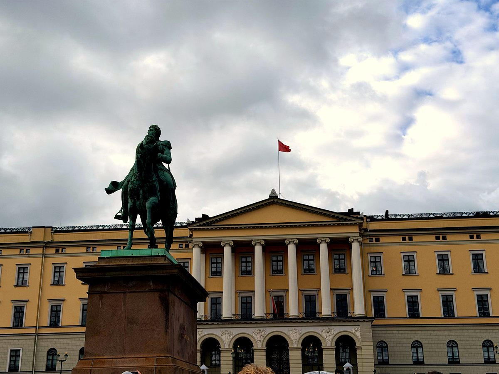

Palace, Fjord & Canvas
Twelve stops from the Royal Palace to the Munch Museum. Along Karl Johans gate and the Oslofjord waterfront, through a city built on resilience, oil, and Expressionism.
From the palace at the top of Karl Johans gate to the Munch Museum at the water's edge. From the boulevard where Norway declared itself to the fjord that defines it.
Leave a quick review. It helps other travellers find us and means a lot.
♥ Thank you so much. We'll read it and add it to the site shortly.
You've seen what this tour is like. The next 9 stops go further. €4.99, yours to keep forever.
Unlock Full Tour - €4.99Payments powered by Lemon Squeezy & Stripe